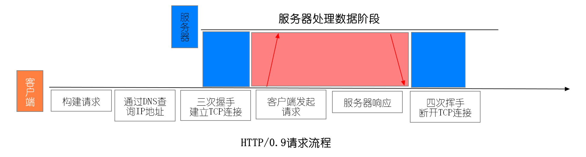
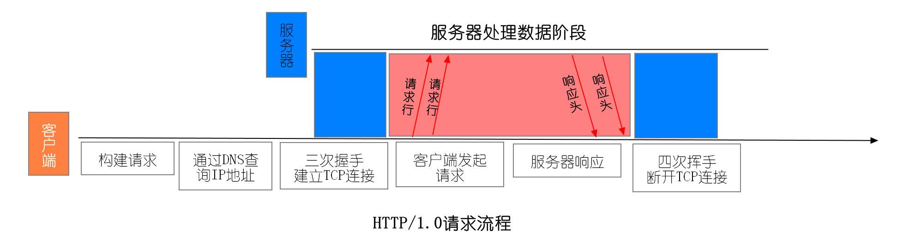
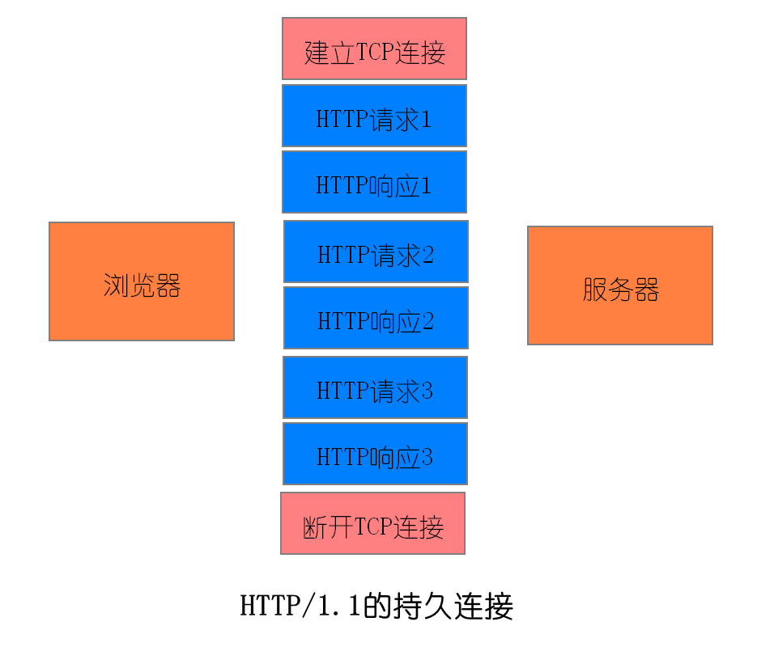
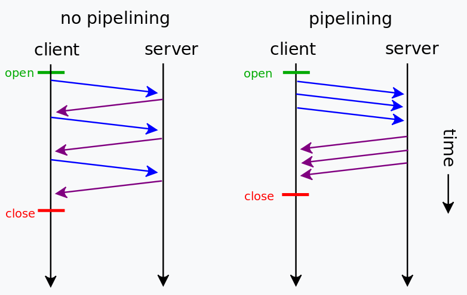
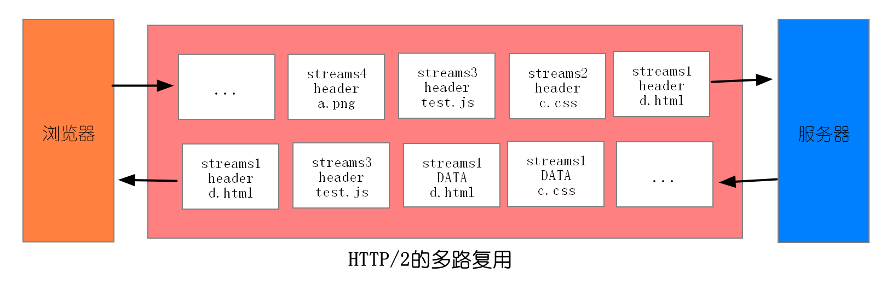
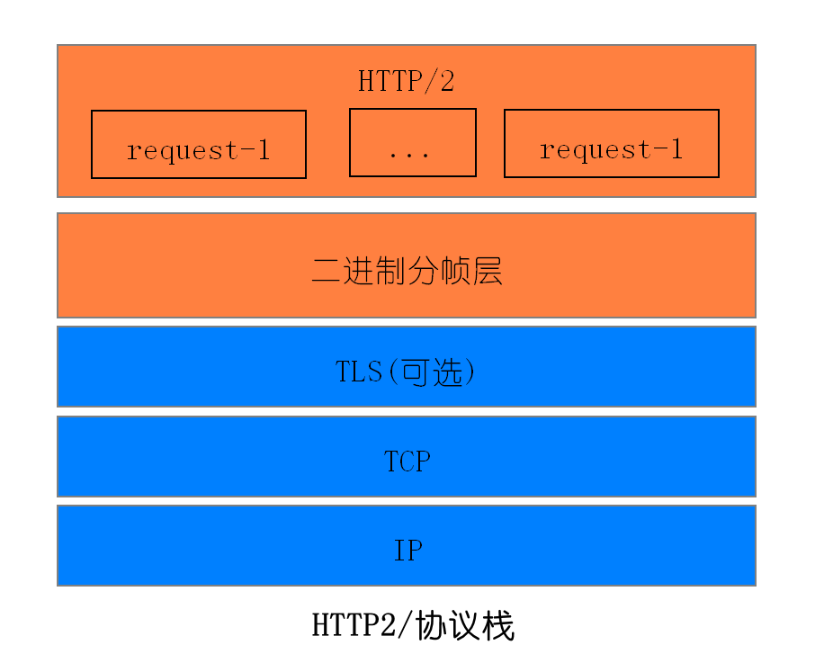
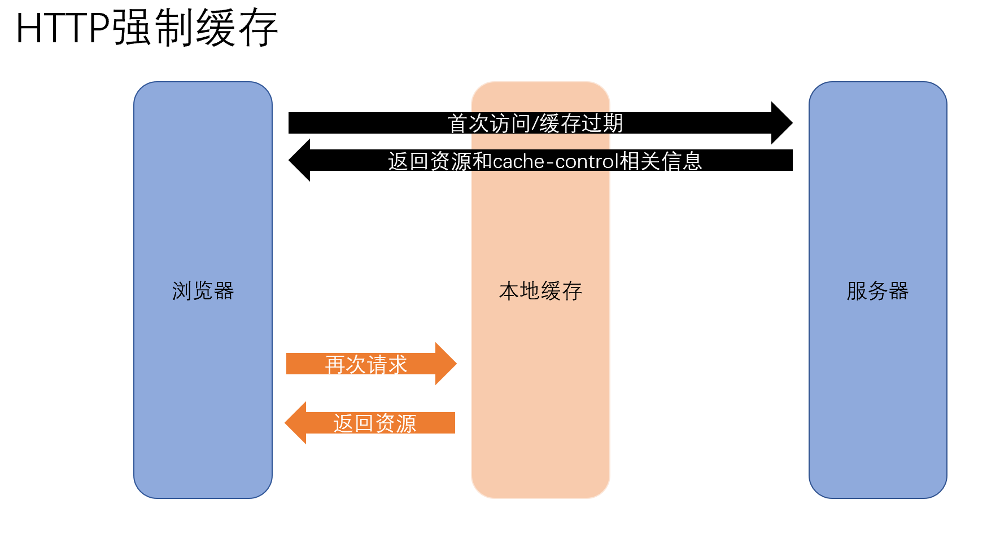
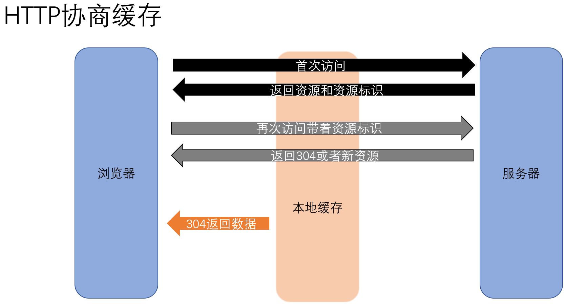
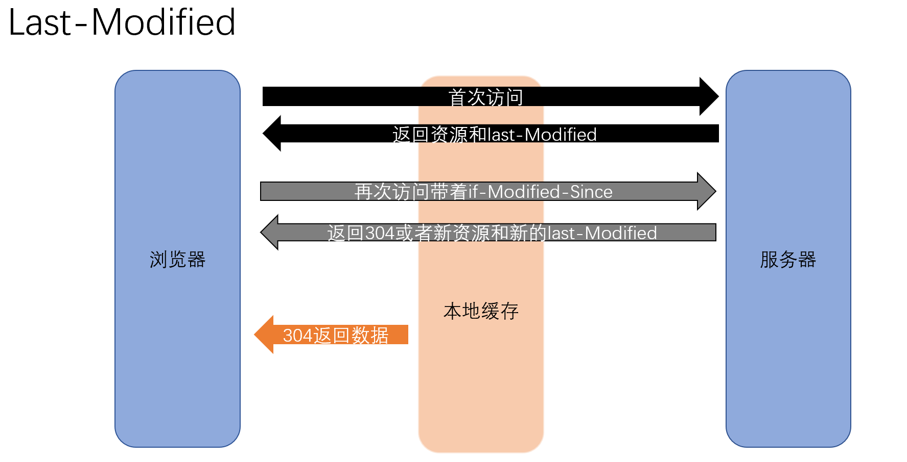
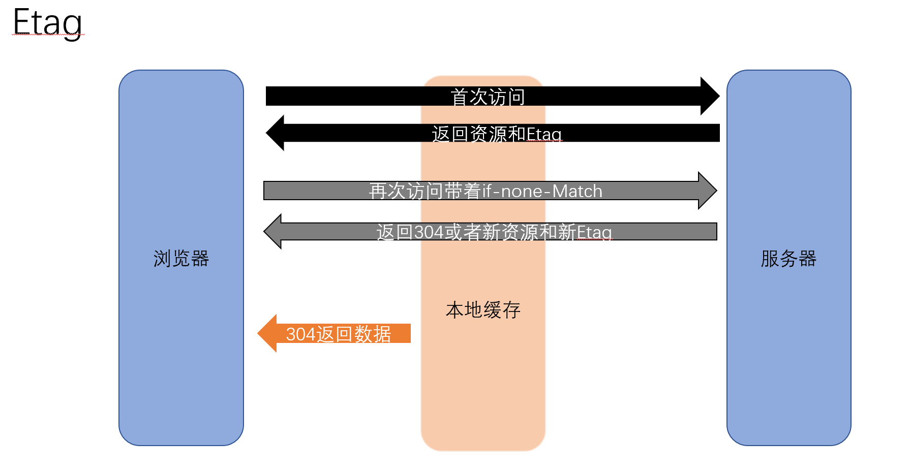

1. http 0.9
下面我们就来看看 HTTP/0.9 的一个完整的请求流程（可参考下图）。
因为 HTTP 都是基于 TCP 协议的，所以客户端先要根据 IP 地址、端口和服务器建立 TCP 连接，而建立连接的过程就是 TCP 协议三次握手的过程。
建立好连接之后，会发送一个 GET 请求行的信息，如GET /index.html用来获取 index.html。
服务器接收请求信息之后，读取对应的 HTML 文件，并将数据以 ASCII 字符流返回给客户端。
HTML 文档传输完成后，断开连接。

HTTP/0.9 请求流程总的来说，当时的需求很简单，就是用来传输体积很小的 HTML 文件，所以 HTTP/0.9 的实现有以下三个特点。
第一个是只有一个请求行，并没有 HTTP 请求头和请求体，因为只需要一个请求行就可以完整表达客户端的需求了。
第二个是服务器也没有返回头信息，这是因为服务器端并不需要告诉客户端太多信息，只需要返回数据就可以了。
第三个是返回的文件内容是以 ASCII 字符流来传输的，因为都是 HTML 格式的文件，所以使用 ASCII 字节码来传输是最合适的。
2. http 1.0


第一个：支持多种类型、格式、编码、语言的文件，添加请求头和响应头
请求头的信息告诉服务器浏览器期望返回的数据的类型、压缩格式、编码类型、语言类型，响应头告诉浏览器我当前返回的数据类型、压缩格式、编码类型、语言类型，因为可能浏览器需要的服务器做不到
1 | accept: text/html; |
1 | content-encoding: brcontent-type: text/html; charset=UTF-8 |
第二个：有的请求服务器可能无法处理，或者处理出错，这时候就需要告诉浏览器服务器最终处理该请求的情况，这就引入了状态码。状态码是通过响应行的方式来通知浏览器的。
第三个：为了减轻服务器的压力，在 HTTP/1.0 中提供了 Cache 机制，用来缓存已经下载过的数据。
第四个：服务器需要统计客户端的基础信息，比如 Windows 和 macOS 的用户数量分别是多少，所以 HTTP/1.0 的请求头中还加入了用户代理的字段。
3. http 1.1
第一个：tcp持久连接，多个http请求可以在同一个tcp连接上进行。只要浏览器或者服务器没有明确断开连接，那么该 TCP 连接会一直保持。
持久连接在 HTTP/1.1 中是默认开启的Connection: keep-alive，所以你不需要专门为了持久连接去 HTTP 请求头设置信息，如果你不想要采用持久连接，可以在 HTTP 请求头中加上Connection: close。目前浏览器中对于同一个域名，默认允许同时建立 6 个 TCP 持久连接。
第二个：管线化,是指将多个 HTTP 请求整批提交给服务器的技术，虽然可以整批发送请求，不过服务器依然需要根据请求顺序来回复浏览器的请求。
目的是解决队头拥塞问题：持久连接虽然能减少 TCP 的建立和断开次数，但是它需要等待前面的请求返回之后，才能进行下一次请求。如果 TCP 通道中的某个请求因为某些原因没有及时返回，那么就会阻塞后面的所有请求
第三个：提供虚拟主机的支持，HTTP/1.1 的请求头中增加了 Host 字段，用来表示当前的域名地址，这样服务器就可以根据不同的 Host 值做不同的处理。
目的是在 HTTP/1.0 中，每个域名绑定了一个唯一的 IP 地址，因此一个服务器只能支持一个域名。但是随着虚拟主机技术的发展，需要实现在一台物理主机上绑定多个虚拟主机，每个虚拟主机都有自己的单独的域名，这些单独的域名都公用同一个 IP 地址。因此，就需要请求头中增加host字段，让服务器知道对应的是哪个虚拟机
第四个: 对动态生成的内容(文件大小未知)提供了支持，HTTP/1.1 引入 Chunk transfer 机制，服务器会将数据分割成若干个任意大小的数据块，每个数据块发送时会附上上个数据块的长度，最后使用一个零长度的块作为发送数据完成的标志。
目的是在设计 HTTP/1.0 时，需要在响应头中设置完整的数据大小，如Content-Length: 901，这样浏览器就可以根据设置的数据大小来接收数据。不过随着服务器端的技术发展，很多页面的内容都是动态生成的，因此在传输数据之前并不知道最终的数据大小，导致了浏览器不知道何时会接收完所有的文件数据。
第五个：HTTP/1.1 还引入了客户端 Cookie 机制
第六个：补充了缓存的请求头和响应头
4. http 2.0
1. 主要需要解决的问题
第一个：一个域名只使用一个 TCP 长连接
目的：
解决tcp有慢启动（刚连接上传输数据慢），减少tcp连接的次数
解决针对同一个域名最多可建立6个tcp连接，每个tcp连接都会占用部分带宽资源，且不会按照优先级分配带宽资源，导致需要先加载出来的数据慢返回
第二个：消除队头阻塞问题
http1.1 管线化还是存在对头阻塞问题
2.解决办法：多路复用

- 浏览器发送请求：将请求通过二进制分帧层，分成一帧一帧的数据去传输（一个请求可以分成多个帧，但是每帧具有相同的ID），比如stream1 请求头和请求体分成不同的帧
- 服务器响应请求：服务器接收到所有帧之后，会将所有相同 ID 的帧合并为一条完整的请求信息，并将处理的响应行、响应头和响应体分别发送至二进制分帧层，返回时可以按照请求优先级（如script标签优先级高于图片）或者响应的速度（如stream1响应头有缓存）返回帧数据
- 浏览器接受数据：浏览器接收到响应帧之后，会根据 ID 编号将帧的数据提交给对应的请求
3. http2.0 特性
- 多路复用
- 一个域名只使用一个 TCP 长连接
- 消除队头阻塞问题
- 可以设置请求的优先级
- 解决服务器接收到数据，先处理优先级高的数据
- 服务器推送
- 服务器知道该 HTML 页面会引用几个重要的 JavaScript 文件和 CSS 文件，那么在接收到 HTML 请求之后，附带将要使用的 CSS 文件和 JavaScript 文件一并发送给浏览器，这样当浏览器解析完 HTML 文件之后，就能直接拿到需要的 CSS 文件和 JavaScript 文件
- 头部压缩
- HTTP/2 对请求头和响应头进行了压缩
5. http状态码
5.1 http状态码分类
1XX系列：指定客户端应相应的某些动作，代表请求已被接受，需要继续处理。
2XX系列：代表请求已成功被服务器接收、理解、并接受。如：200
3XX系列：代表需要客户端采取进一步的操作才能完成请求，这些状态码用来重定向 如：302
4XX系列：表示请求错误。如404
5xx系列：代表了服务器在处理请求的过程中有错误或者异常状态发生，也有可能是服务器意识到以当前的软硬 件资源无法完成对请求的处理。常见有500、503状态码。
5.2 http常用状态码
2开头 （请求成功）表示成功处理了请求的状态代码。
- 200 （成功） 服务器已成功处理了请求。 通常，这表示服务器提供了请求的网页。
3开头 （请求被重定向）表示要完成请求，需要进一步操作。 通常，这些状态代码用来重定向。
- 301 （永久移动） 请求的网页已永久移动到新位置。 服务器返回此响应（对 GET 或 HEAD 请求的响应）时， 会自动将请求者转到新位置。
- 302 （临时移动） 服务器目前从不同位置的网页响应请求，但请求者应继续使用原有位置来进行以后的请求。
- 304 （未修改） 自从上次请求后，请求的网页未修改过。 服务器返回此响应时，不会返回网页内容。
4开头 （请求错误）这些状态代码表示请求可能出错，妨碍了服务器的处理。
- 403 （禁止） 服务器拒绝请求。
- 404 （未找到） 服务器找不到请求的网页。
5开头（服务器错误）这些状态代码表示服务器在尝试处理请求时发生内部错误。 这些错误可能是服务器本身 的错误，而不是请求出错。
- 500 （服务器内部错误） 服务器遇到错误，无法完成请求。
- 504 （网关超时） 服务器作为网关或代理，但是没有及时从上游服务器收到请求。
6. http请求头和响应头
6.1 常用的http请求头
1.Accept
Accept: text/html 浏览器可以接受服务器回发的类型为 text/html。
Accept: / 代表浏览器可以处理所有类型,(一般浏览器发给服务器都是发这个)。
2.Accept-Encoding
Accept-Encoding: gzip, deflate 浏览器申明自己接收的编码方法，通常指定压缩方法，是否支持压缩，支持什么压缩方法（gzip，deflate），（注意：这不是只字符编码）。
3.Accept-Language
**Accept-Language:zh-CN,zh;q=0.9 ** 浏览器申明自己接收的语言。
4.Connection
Connection: keep-alive 当一个网页打开完成后，客户端和服务器之间用于传输HTTP数据的TCP连接不会关闭，如果客户端再次访问这个服务器上的网页，会继续使用这一条已经建立的连接。
Connection: close 代表一个Request完成后，客户端和服务器之间用于传输HTTP数据的TCP连接会关闭， 当客户端再次发送Request，需要重新建立TCP连接。
5.Host（发送请求时，该报头域是必需的）
Host:www.baidu.com 请求报头域主要用于指定被请求资源的Internet主机和端口号，它通常从HTTP URL中提取出来的。
6.User-Agent
User-Agent:Mozilla/5.0 (Windows NT 6.1; Win64; x64) AppleWebKit/537.36 (KHTML, like Gecko) Chrome/70.0.3538.110 Safari/537.36 告诉HTTP服务器， 客户端使用的操作系统和浏览器的名称和版本。
服务端拿到该信息就可以统计用户访问时使用的设备
7.Cookie
Cookie是用来存储一些用户信息以便让服务器辨别用户身份的（大多数需要登录的网站上面会比较常见），比如cookie会存储一些用户的用户名和密码，当用户登录后就会在客户端产生一个cookie来存储相关信息，这样浏览器通过读取cookie的信息去服务器上验证并通过后会判定你是合法用户，从而允许查看相应网页。当然cookie里面的数据不仅仅是上述范围，还有很多信息可以存储是cookie里面，比如sessionid等。
8.content-type: 发送数据的格式，如：application/json get请求一般没有
6.2 常见响应头
1.Cache-Control（对应请求中的Cache-Control）
Cache-Control:private 默认为private 响应只能够作为私有的缓存，不能再用户间共享
Cache-Control:public 浏览器和缓存服务器都可以缓存页面信息。
Cache-Control:must-revalidate 对于客户机的每次请求，代理服务器必须想服务器验证缓存是否过时。
Cache-Control:no-cache 浏览器和缓存服务器都不应该缓存页面信息。
Cache-Control:max-age=10 是通知浏览器10秒之内不要烦我，自己从缓冲区中刷新。
Cache-Control:no-store 请求和响应的信息都不应该被存储在对方的磁盘系统中。
2.Last-Modified
Last-Modified: Dec, 26 Dec 2015 17:30:00 GMT 所请求的对象的最后修改日期(按照 RFC 7231 中定义的“超文本传输协议日期”格式来表示)
3.Etag
ETag: “737060cd8c284d8af7ad3082f209582d” 就是一个对象（比如URL）的标志值，就一个对象而言，比如一个html文件，如果被修改了，其Etag也会别修改，所以，ETag的作用跟Last-Modified的作用差不多，主要供WEB服务器判断一个对象是否改变了。比如前一次请求某个html文件时，获得了其 ETag，当这次又请求这个文件时，浏览器就会把先前获得ETag值发送给WEB服务器，然后WEB服务器会把这个ETag跟该文件的当前ETag进行对比，然后就知道这个文件有没有改变了。
4.Content-Type
Content-Type：text/html;charset=UTF-8 告诉客户端，资源文件的类型，还有字符编码，客户端通过utf-8对资源进行解码，然后对资源进行html解析。通常我们会看到有些网站是乱码的，往往就是服务器端没有返回正确的编码。
5.Content-Encoding
Content-Encoding:gzip 告诉客户端，服务端发送的资源是采用gzip编码的，客户端看到这个信息后，应该采用gzip对资源进行解码。
6.Date
Date: Tue, 03 Apr 2018 03:52:28 GMT 这个是服务端发送资源时的服务器时间，GMT是格林尼治所在地的标准时间。http协议中发送的时间都是GMT的，这主要是解决在互联网上，不同时区在相互请求资源的时候，时间混乱问题。
7.Server
Server：Tengine/1.4.6 这个是服务器和相对应的版本，只是告诉客户端服务器信息。
8.Expires
Expires:Sun, 1 Jan 2000 01:00:00 GMT 这个响应头也是跟缓存有关的，告诉客户端在这个时间前，可以直接访问缓存副本，很显然这个值会存在问题，因为客户端和服务器的时间不一定会都是相同的，如果时间不同就会导致问题。所以这个响应头是没有Cache-Control：max-age=*这个响应头准确的，因为max-age=date中的date是个相对时间，不仅更好理解，也更准确。
9.Connection
Connection：keep-alive 这个字段作为回应客户端的Connection：keep-alive，告诉客户端服务器的tcp连接也是一个长连接，客户端可以继续使用这个tcp连接发送http请求。
10.Access-Control-Allow-Origin
**Access-Control-Allow-Origin: * ** 号代表所有网站可以跨域资源共享，如果当前字段为那么Access-Control-Allow-Credentials就不能为true
Access-Control-Allow-Origin: www.baidu.com 指定哪些网站可以跨域资源共享
11.Access-Control-Allow-Methods
Access-Control-Allow-Methods：GET,POST,PUT,DELETE 允许哪些方法来访问
12.Access-Control-Allow-Credentials
Access-Control-Allow-Credentials: true 是否允许发送cookie。默认情况下，Cookie不包括在CORS请求之中。设为true，即表示服务器明确许可，Cookie可以包含在请求中，一起发给服务器。这个值也只能设为true，如果服务器不要浏览器发送Cookie，删除该字段即可。如果access-control-allow-origin为*，当前字段就不能为true
7.http缓存
7.1 http缓存的作用
- 节省资源，节省流量，节省时间，也就是所谓的优化。
通常情况下通过网络获取内容速度慢成本高，有些响应需要在客户端和服务器之间进行多次往返通信，
这就拖延了浏览器可以使用和处理内容的时间，同时也增加了访问者的数据成本。
通过缓存，使用资源副本，大大减少获取资源时间，
能够减少网络带宽消耗、减少延迟与网络阻塞，同时降低服务器压力，提高服务器性能。
7.2 http缓存两种方式
- 强制缓存
- 协商缓存
7.3 http强制缓存
强制缓存相关响应头
Cache-Control（对应请求中的Cache-Control）
- max-age=xxx：缓存的内容将在 xxx 秒后失效，这个选项只在 HTTP1.1 可用，并如果和 Last-Modified 一起使用时，优先级较高。
- no-cache: 在浏览器使用缓存前，会往返对比 ETag，如果 ETag 没变，返回 304，则使用协商缓存。no-cache的目的就是为了防止从缓存中获取过期的资源
- no-store: 彻底禁用缓存，所有内容都不会被缓存到缓存或临时文件中，禁用协商缓存。
- public: 所有内容都将被缓存（客户端和代理服务器都可缓存）
- private: 内容只缓存到私有缓存中（仅客户端可以缓存，代理服务器不可缓存）
- Expires: Expires:Sun, 1 Jan 2000 01:00:00 GMT 这个响应头也是跟缓存有关的，
告诉客户端在这个时间前，可以直接访问缓存副本，很显然这个值会存在问题，
因为客户端和服务器的时间不一定会都是相同的，如果时间不同就会导致问题。
所以这个响应头是没有Cache-Control：max-age=*这个响应头准确的，
因为max-age=date中的date是个相对时间，不仅更好理解，也更准确。
7.4 http协商缓存
  相关请求头和响应头
Etag/If-None-Match：
Etag：
Etag是属于HTTP 1.1属性，它是由服务器（Apache或者其他工具）生成返回给前端，用来帮助服务器控制Web端的缓存验证。 Apache中，ETag的值，默认是对文件的索引节（INode），大小（Size）和最后修改时间（MTime）进行Hash后得到的。
If-None-Match:
当资源过期时，浏览器发现响应头里有Etag,则再次像服务器请求时带上请求头if-none-match(值是Etag的值)。服务器收到请求进行比对，决定返回200或304
Last-Modifed/If-Modified-Since：
Last-Modified：
浏览器向服务器发送资源最后的修改时间
If-Modified-Since：
当资源过期时（浏览器判断Cache-Control标识的max-age过期），发现响应头具有Last-Modified声明，则再次向服务器请求时带上头if-modified-since，表示请求时间。服务器收到请求后发现有if-modified-since则与被请求资源的最后修改时间进行对比（Last-Modified）,若最后修改时间较新（大），说明资源又被改过，则返回最新资源，HTTP 200 OK;若最后修改时间较旧（小），说明资源无新修改，响应HTTP 304 走缓存。
- Last-Modifed/If-Modified-Since的时间精度是秒，而Etag可以更精确。
- Etag优先级是高于Last-Modifed的，所以服务器会优先验证Etag
- Last-Modifed/If-Modified-Since是http1.0的头字段
7.5 缓存总流程